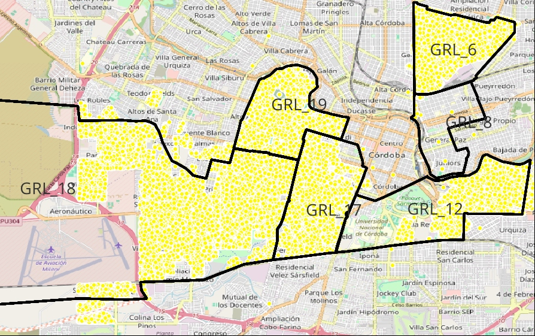
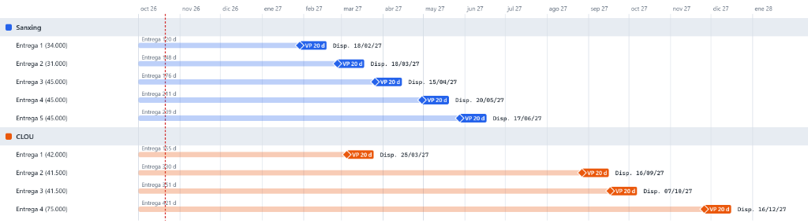

Plan de Despliegue de Medidores Inteligentes y Concentradores PLC
Coordinación de Stock con Verificación Primitiva, Homogeneidad por SET y Ejecución de Cuadrillas
● En Planificación Activa
Total Medidores AMI
400.000
200k Sanxing + 200k CLOU
Concentradores PLC
6.000
Cabeceras de Subestación (SET)
Mano de Obra Contratada
188.000 USE
Rowing (94k) + Conectar (94k)
Cuadrillas Mínimas Diarias
50 Cuadrillas
~700 instalaciones / día hábil
📌 Síntesis Operativa y Reglas Rectoras
Regla de Oro Operativa: No se despliega en ninguna acometida si la Subestación Transformadora (SET) no cuenta con Concentrador PLC instalado y reportando al Headend (estado "SET OK").
🏭 Lotes Adjudicados por Proveedor
- OP 27131 (Sanford Global Trade LLC): 160.000 Monofásicos + 40.000 Trifásicos + 3.000 Concentradores. Marca Sanxing / CLOU.
- OP 27133 (Nicema S.A.): 160.000 Monofásicos (158k PLC + 2k GPRS) + 40.000 Trifásicos + 3.000 Concentradores.
- OP 27132 (Rowing S.A.): 94.000 USE Mano de obra (Límite contractual: Enero 2028).
- OP 27134 (Conectar S.R.L.): 94.000 USE Mano de obra (Límite contractual: Marzo 2028).
🗺️ Estrategia de Asignación Territorial
- Plan 19 (Capital): Conservar homogeneidad con los ~10.000 Nansen preexistentes.
- Plan 6 (Capital): Asignación CLOU por continuidad eléctrica con Plan 4.
- Plan 18 (Capital): Asignación SANXING para absorber el Lote 1 (Disp. 18/02/2027).
- San Francisco (Interior): 28.000 puntos asignados en bloque a SANXING.
📅 Cronograma de Disponibilidad Real en Campo (`Disp.`)
Considera los plazos contractuales más los 20 días de Verificación Primitiva (VP) de la Res. 247/2019 de laboratorios.
| Lote / Marca | Cantidad | Días Plazo | Verif. Primitiva | Fecha Disponible | Stock Acumulado | Destino Estratégico |
|---|
🗺️ Diagnóstico y Prioridades: Córdoba Capital (Zona A)
🌾 Distritos del Interior: Puntos Relevados y Programación
⚡ Simulación: Ritmo de Cuadrillas vs. Disponibilidad de Stock
🖼️ Documentación Visual HD: Mapas y Diagramas de Avance
Cartografía GIS: Planes Zona A (Capital)

Relevamiento de suministros (puntos amarillos) y delimitación de planes 6, 8, 12, 17, 18 y 19.
Cronograma Gantt Oficial: Entregas Sanxing y CLOU

Hitos de Verificación Primitiva (VP 20d) y fechas reales de disponibilidad operativa en almacén.